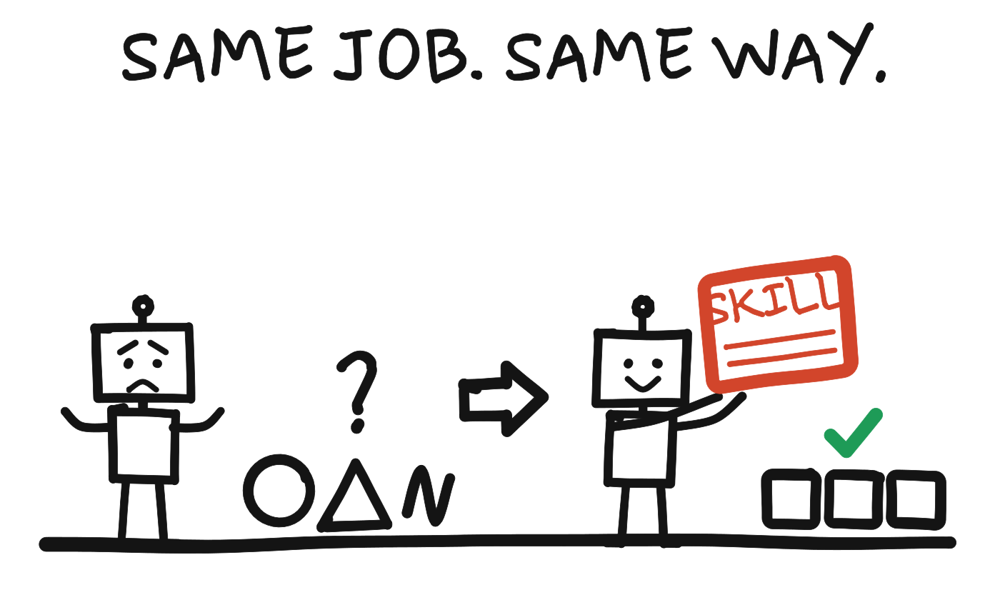

Every skill in my Claude account, grouped by the job it does: what it's for, and what I say to call it. I never have to name a skill; saying the words in the last column is enough.
Updated November 13, 2026. A skill is a written set of instructions Claude loads when the work calls for it, so a job gets done the same way every time.

These keep sessions findable, carry work from one chat to the next, and force decisions.
| Skill | What it's for | Say |
|---|---|---|
| session-board | One line per session on my Session Board: what it's doing, its status, its link | "check in", "park this", "what's open", "where was I working on X" |
| make-it-simple | Cuts any answer down to one line (done or not done yet) and the 1, 2, 3 things only I have to do | "make it simple", "too much", "just tell me what to do", "are we done" |
| ml-handoff | Writes down everything a new chat needs to continue the work, plus a prompt to paste into it | "handoff", "pause here", "I'm going to start a new chat" |
| ml-sweep | Tests a code project (a site, a page, a tool), fixes what's broken, then writes the handoff | "sweep it", "run QA", "final pass" |
| ml-intake | The front door: turns a goal into a written brief and picks which skills run, in what order | State a goal without naming a skill |
| ml-marketing-chain | Runs the whole sequence from research to finished piece when a job spans several skills | "run the chain", "where do I start", "why isn't this working" |
| ml-workflow-engine | Builds several competing versions, critiques and ranks them, with my approval before each costly step | "give me competing drafts and pick a winner" |
| ml-grill-me | Interviews me about a plan one question at a time, ending in a locked decision and one next action | "grill me", "poke holes in this" |
| ml-ship-gate | Stops the stall: when drafts and options pile up, forces one piece to be finished and sent | "narrow down", "start over" |
| ml-decision-rules | Settles who decides what when several AIs or advisors disagree, and logs the decision | "the AIs disagree", "log this decision" |
| ml-three-outcomes | Scores a tool or idea on money in, hours back and customers kept: do now, later, or toy | "score this", "is this tool worth it" |
| branch-session | Starts a linked session under the current one, with a title and a short brief, so related work stays together | "branch a session", "spin off a session" |
| inbox-check | Sweeps my Gmail for junk, recaps what needs me, and picks 10 junk candidates | "check my inbox" |
| daily-todo-review | My daily to-do review: tidies the list, checks my notes, and sends me the review | "to-do review" |
| discernment-nudge | After a big answer or draft, adds two or three questions that help me check the facts and the reasoning | Runs on its own after substantial answers |
| academy-guide | When I am learning how to use Claude, points me to a matching Claude Academy course | "how do I", "teach me" |
What happens before any copy is written, in roughly this order.
| Skill | What it's for | Say |
|---|---|---|
| ml-reality-corpus | Mines raw material (calls, surveys, voice memos, testimonials) into the customer's own words | "pull out the gold", "mine this for messaging" |
| ml-market-intelligence | Researches the market, the buyer and the competition, then positions the offer against them | "who is this for", "what makes me different" |
| ml-belief-chain | Maps what a stranger must believe, and in what order, to buy, then squeezes it toward three beliefs and writes an answer for every belief it cuts (why it changed) | "what do they need to believe to buy" |
| ml-offer-architect | Designs the offer: contents, price, tiers, bonuses, guarantee | "lock the offer", "what should we charge", "package this" |
| ml-funnel-hack | Tears down the top sites in a niche and delivers a swipe file of what to steal | "funnel hack", "who's winning in this niche" |
| prospect-read | Reads one real person from a name: who they are, how they see me, how to win them | "read this prospect" plus the name |
| ml-local-dossier | One-page pre-call brief on a local business from public information | "dossier on" plus the business |
| Skill | What it's for | Say |
|---|---|---|
| ml-hook-engine | Headlines, hooks and opening lines, as options to pick from | "give me hooks", "headline options" |
| ml-copy-engine | Sales pages, VSLs, landing pages, ads, upsells, written section by section | "write the sales page", "write the VSL" |
| ml-letter-assembler | Builds a long-form sales letter piece by piece once research, beliefs and offer are locked | "let's write the letter", "draft section X" |
| ml-email-engine | Email sequences and broadcasts in my story-selling style, plus subject lines | "email sequence", "launch emails", "subject line" |
| ml-newsletter | A newsletter issue or section in my voice | "write the issue", "this week's issue" |
| ml-linkedin | A LinkedIn post in my voice | "write a LinkedIn post" |
| ml-origin-story | My origin story in six lengths, from full version to bio | "origin story", "write the about page", "bio" |
| ml-epiphany-bridge | Russell Brunson's Epiphany Bridge story: the aha moment that sells | "epiphany bridge", "how I discovered..." |
| story-lesson | A story, lesson or parable in my voice where the lesson lands | "document this moment", "write this as a story" |
| ml-language-installation | Sentence-level persuasion: wording that installs belief before the ask | "this copy is clean but not moving anyone" |
| jdb-curiosity-copy | Blind, curiosity-driven bullets and opt-in copy in Jimmy D. Brown's style | "curiosity bullets" |
| plank-speed-copy | Robert Plank-style copy that sells speed and done-for-you | "Plank style" |
Each lens writes or audits copy the way one copywriter would. I say "write this like" plus the name. When I'm not sure which, copy-lens-picker chooses: "who's best at this?"
| Lens | Best for |
|---|---|
| lens-belcher | Low-ticket front ends, tripwires, funnel and offer architecture |
| lens-belgray | Funny, personal list emails and subject lines |
| lens-bencivenga | Proof-heavy long-form letters for skeptical markets |
| lens-benson | Text-on-screen VSL scripts |
| lens-brunson | Webinar and stage pitches, Hook-Story-Offer, the Stack close |
| lens-clemens | Founder-story letters and VSLs for health and beauty products |
| lens-ford | One big idea; info-publishing and subscription promos |
| lens-halbert | Personal-feeling sales letters and mail that gets opened |
| lens-kennedy | Long-form letters for high-ticket offers; deadlines, proof, guarantees |
| lens-makepeace | Emotion-led health and financial promos |
| lens-ogilvy | Premium, considered purchases; researched, fact-rich ads |
| lens-schwartz | Matching the pitch to how aware and how jaded the market is |
| lens-settle | Daily plain-text infotainment emails from a strong persona |
| lens-sultanic | Closes, upsells, price framing, reviving dead offers |
| lens-throssell | Serialized story emails and welcome sequences |
| lens-todd-brown | Big Idea plus Unique Mechanism for saturated markets |
| lens-wiebe | Landing pages and CTAs built from customers' own words; editing drafts |
| Skill | What it's for | Say |
|---|---|---|
| ml-content-grade | Scores a draft for my voice and for conversion, and says what to fix | "grade this", "is this ready", "why isn't this converting" |
| ml-ogilvy-audit | Audits business writing for plain-writing craft against Ogilvy's rules | "audit this memo", "is this well written" |
| conversion-sim | Runs copy past a simulated room of buyers to see how it converts | "run a test", "simulate this" |
| hidden-assumptions | Finds and tests the assumptions hiding under a test, a result or a rule, using Rich Schefren's Hidden Obstacles process (the first run) | "hidden obstacles", "challenge the assumptions" |
| price-sim | Runs the same room past the offer at each candidate price | "test these prices", "what should we charge" |
| skeptic-study | Finds out why the simulated no-buyers said no, and what would change it | "why didn't they buy" |
| copywriter-contest | Three or four copywriter lenses each rewrite the piece, then every rewrite is simulated | "run the contest" |
| Skill | What it's for | Say |
|---|---|---|
| ml-funnel-cro | Finds where a funnel, page or checkout leaks and the single best fix | "where is the money leaking", "audit this funnel" |
| ml-paid-media | Meta ads (and Google basics): diagnose, build, audit an account | "my ads stopped working", "set up the campaign" |
| local-meta-ads | My own playbook for Facebook and Instagram ads that fill a local event | "ads for the next local night" |
| ml-backend-economics | Everything after the first sale: upsell path, retention, refunds, launches | "how do I make more from existing buyers" |
| ml-sales-conversation | High-ticket discovery and close calls, the application, objections | "prep me for this call", "how do I close this" |
| ml-client-engine | Getting and keeping clients for a services practice: scope, structure, hard clients | "how should I structure this engagement" |
| ml-book-publishing | Partnering with an expert and building the business around them for a share | "find me publishing partners", "how should we split this" |
| Skill | What it's for | Say |
|---|---|---|
| ml-mini-assessment | The 15-minute call: name one bottleneck, prescribe one fix, book the full assessment | "prep the mini for" plus the name |
| ml-ai-assessment | The paid AI Assessment end to end: discovery, scored report, close | "run the assessment for" plus the client |
| ml-concierge-call | The twice-monthly AI Concierge call that installs one workflow | "prep the concierge call" |
| ml-automation-recipes | A plain-English automation fix for a client's bottleneck | "what's the fix for missed calls" |
| ml-knowledge-base | Builds a client's company brain from its documents | "build their knowledge base" |
| ml-gift-tour | A phone tour for a business: research, then one link with 3 to 7 tap-through pages | "gift tour", "blow them away" |
| ml-live-website | Redo a business's website fast with the owner in the room | "redo their website", "hot seat" |
| ml-capture-social-proof | Files a piece of social proof the moment it turns up | "save this as social proof" |
| Skill | What it's for | Say |
|---|---|---|
| ml-studio | One visual deliverable (homepage, landing page, deck) built and shown as options until I approve | "build the homepage", "show me options" |
| ml-page-review | Opens a page in a review window where I edit text and leave comments in one batch | "let me review it" |
| ml-brand | Makes or checks any Maximum Leverage asset against the ML brand | "make this on brand for ML" |
| ml-brand-kit | Brand kit for a local business before its site is built: logo, colors, type | "brand kit for" plus the client |
| ml-brand-identity | Logo system and identity for an app or product, with app icon and brand sheet | "identity for this app" |
| ml-logo-design | A logo from brief to final files, with concepts and a presentation board | "design a logo" |
| ml-transitions-dev | Adds animations to a web page: menus, pop-ups, loading states, hover effects | "make it animate" |
| ml-transitions-polish | Tunes animations that already exist | "the timing feels off" |
| canvas-design | A poster or static piece of visual art as an image or PDF | "make a poster" |
| webapp-testing | Tests a web app running locally and takes screenshots | "test the page in a browser" |
| Skill | What it's for | Say |
|---|---|---|
| explainer-video | My narrated explainers: fit one screen, 1.5x speed, filed in my Explainer Library | "explainer", "walk me through X" |
| ml-explainer | A 60 to 90 second narrated, captioned video with Maximum Leverage branding | "ML explainer video" |
| ml-explainer-business | Marker-doodle drawings that make one business idea land for an owner | "owner doodle" |
| napkin-sketch | A back-of-the-napkin drawing for one idea | "napkin", "doodle this" |
| ml-wrapped-video | Year-in-review style videos made from a table of data, one per person | "make a wrapped video" |
| Skill | What it's for | Say |
|---|---|---|
| ml-skill-forge | Builds, tests, tunes and audits the skills themselves | "build me a skill", "audit the skills" |
| ml-library-miner | Turns a pile of transcripts or documents into an indexed digest, then into skills | "turn these transcripts into a skill" |
| skill-model-picker | Sorts a new skill by the kind of work it does and sets which Claude model it uses | "which model for this skill", "sort this skill" |
| skill-upgrade-review | The monthly review: the strongest model reads every skill and proposes upgrades, one at a time | "monthly skill review", "upgrade my skills" |
| ship-skill | Keeps my skills repo and my installed skills matched, and packages a skill for upload | "ship this skill", "check skill drift" |
| skills-sweep | Nightly copy of my installed skills into my private repo so it stays the master copy | "sweep my skills", "back up my skills" |
Claude also has built-in skills for Word, Excel, PowerPoint and PDF files, research, charts and data. They run on their own when the work calls for them.
Most skills starting with ml- came from Jason Gazaway's library. The rest were built for me in my own sessions, or ship with Claude.